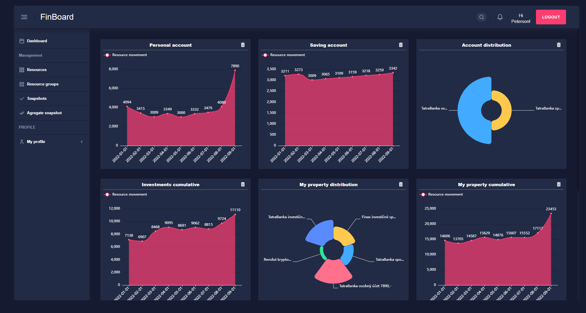
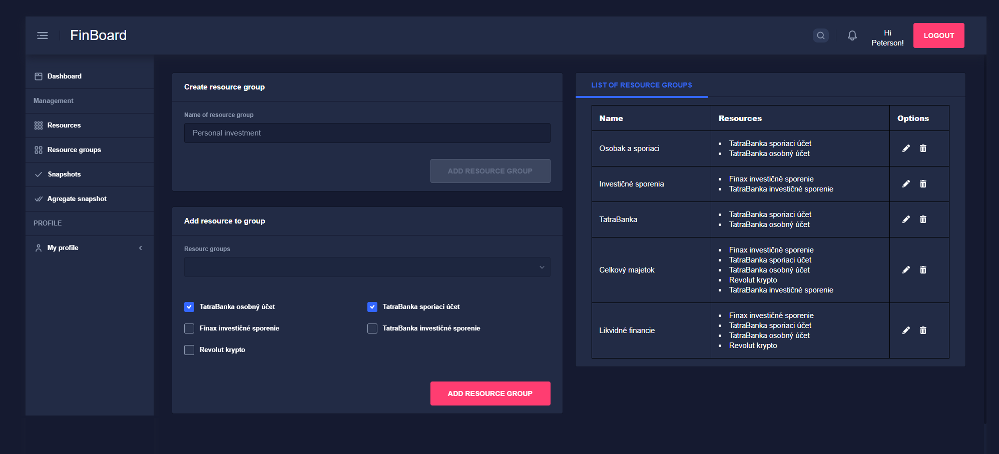
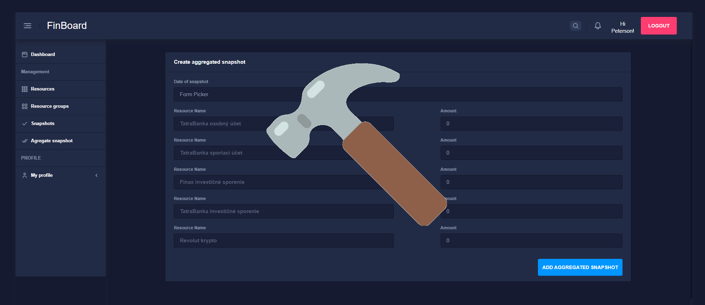

<nb-card>
    <nb-card-body style="padding: 40px 40px 0px 40px; text-align: justify;">
        <div class="row col-12 pb-4">
            <div class="col col-6">
                <h5 class="paragraph-header">What is Finboard?</h5>
                <p class="paragraph-describe">
                    <u>Finboard</u> was designed to help understand and visualise own portfolio based on own preferences
                    and needs. Do you need to group speficic resources, visualise them and watch they growt? Finboard
                    will do it for you!
                </p>
            </div>
            
        </div>

        <div class="row col-12 pb-4">
            
            <div class="col col-6">
                <h5 class="paragraph-header">What Finboard offer?</h5>
                <p class="paragraph-describe">
                    <u>Finboard</u> allows you specify resources wchich you want track. It also brings an oportunity to
                    group them into resouce groups. All what u need to setup resource/resource groups and every month
                    (or your designated period) fill billance.
                </p>
            </div>

        </div>

        <div class="row col-12 pb-4">
            <div class="col col-6">
                <h5 class="paragraph-header">... but remember</h5>
                <p class="paragraph-describe">
                    <u>Finboard</u> is in very early phase of development as a hobby project and as an every application may contain bugs. Regardless it offers quite
                    interesting functionalities. So Enjoy!
                </p>
            </div>
            
        </div>

    </nb-card-body>
</nb-card>